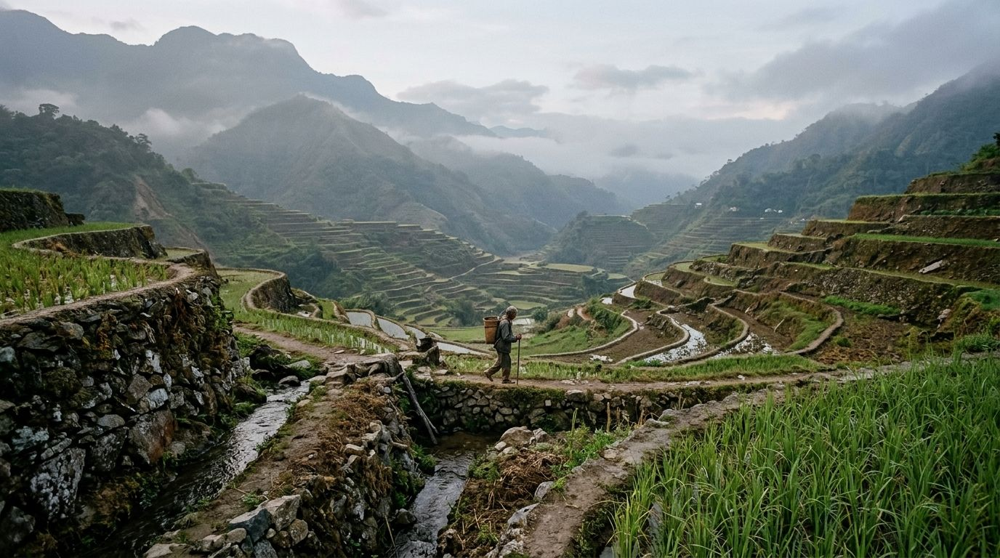
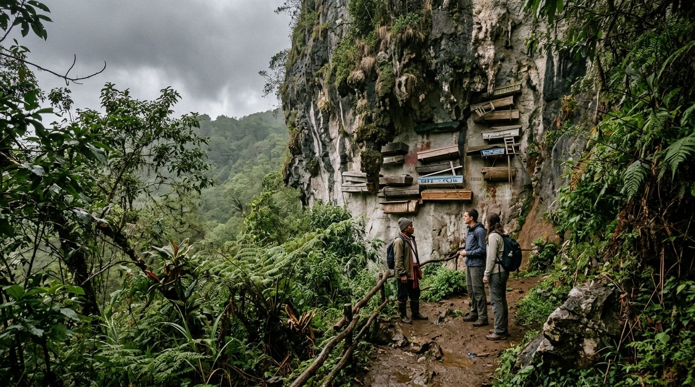
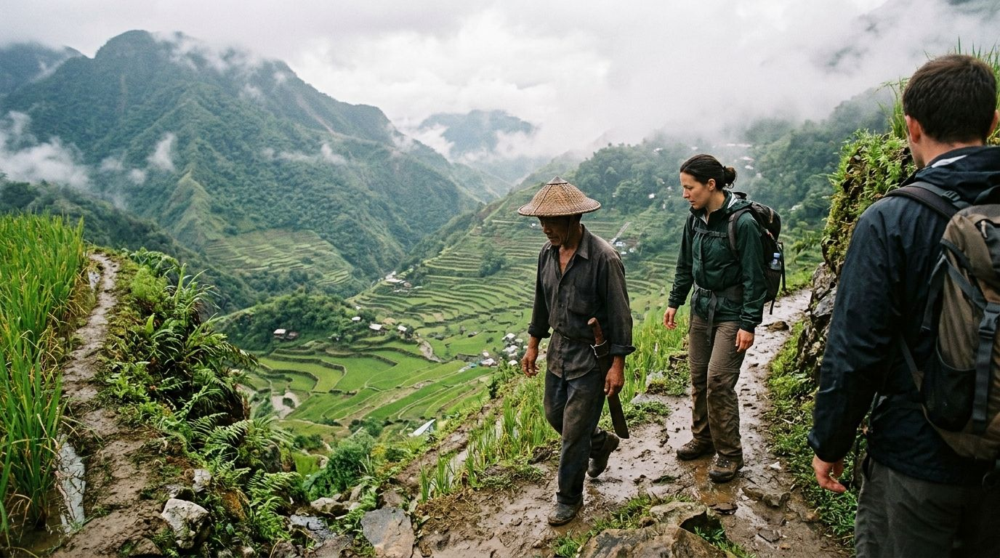
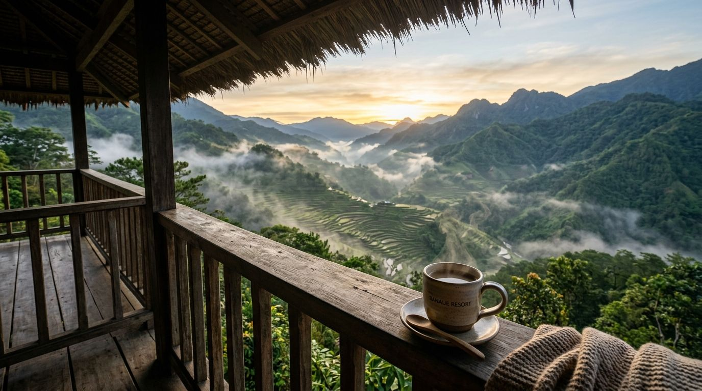
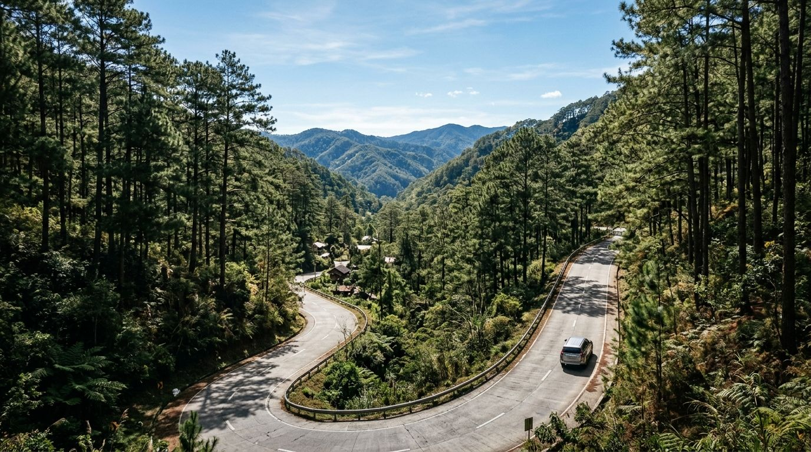

Stairways to Heaven
Recognized as a UNESCO World Heritage site, the ancient rice terraces of Ifugao represent two millennia of sustainable mountain farming and living indigenous culture.

Batad Rice Amphitheater
Trek down into the colossal stone amphitheater of Batad village, surrounded by jade green terraces and Tappiya Waterfall.

Sagada Hanging Coffins
Discover misty pine valleys, sacred indigenous burial traditions in Echo Valley, and the massive Sumaguing Cave system.

Ifugao Heritage & Weaving
Meet village elders, stay in traditional wooden native huts, and witness handloom weaving of traditional mountain textiles.
Signature Cordillera Adventures

Private Batad Terraces & Tappiya Waterfall Trek
Guided private trek along narrow stone terrace walls into Batad village. Take a refreshing swim under 70-meter Tappiya Waterfall before enjoying mountain coffee overlooking the valley.
Sagada Echo Valley & Sumaguing Cave Expedition
Explore Sagada’s pine-scented Echo Valley to view hanging coffins attached to limestone cliffs, followed by a lamp-lit spelunking journey inside Sumaguing Cave's rock chambers.
12-Day Cordillera Mountain Heritage & Island Hopping Odyssey
- Private Air-Conditioned SUV Chauffeur from Manila
- Guided Batad Terraces Trek & Sagada Echo Valley Tour
- Bespoke Mountain Lodge Stays & Heritage Gastronomy
Handpicked Mountain Lodges

4★ HERITAGE LODGEBanaue Grand Heritage Lodge
Perched over the valley with panoramic mountain terrace views, featuring wooden craft interiors, cozy fireplaces, and cultural dance performances.

4★ MOUNTAIN RETREATSagada Pine Mountain Haven
Rustic boutique retreat surrounded by fragrant pine forests, featuring organic farm dining, artisan coffee, and private balcony valley views.
Banaue Concierge Guide
Getting There
Travel by private chauffeured luxury SUV from Manila (approx 8–9 hours) with scenic rest stops in Nueva Vizcaya and Solano.
Best Season
December through May provides clear mountain skies and pleasant trekking temperatures. Terraces turn brilliant green between March and June.
Gastronomy
Sample organic Tinawon red rice, Sagada lemon pie, highland Arabica coffee, and mountain wild boar specialties.
Concierge Tip
Pack sturdy waterproof trekking boots and layered clothing, as mountain temperatures drop pleasantly in the evening.
Plan Your Cordillera Journey
Let our concierge specialists organize your private SUV drive, expert mountain trekking guides, and heritage lodge stays.
- ✓ Private Chauffeurs & Mountain SUV Fleet
- ✓ Licensed Indigenous Guides & Trek Passes
- ✓ 24/7 Dedicated Concierge Support